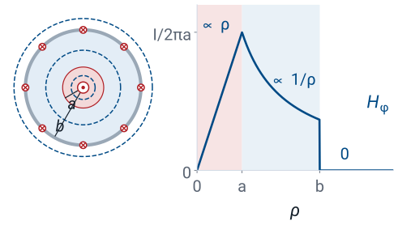
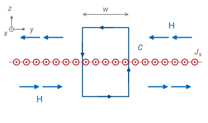
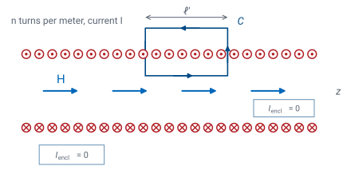
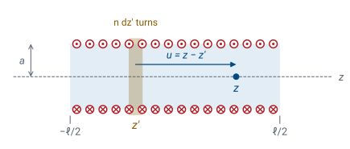
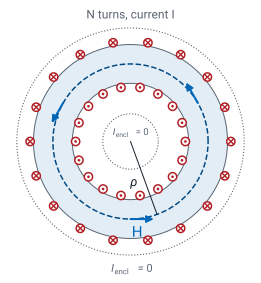
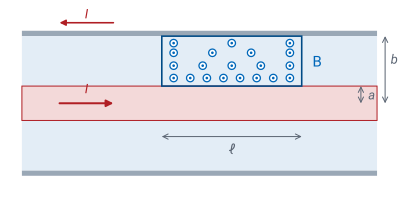

L30 - Ampere’s Law Applied#
Ampere's Law Applied
Today we find the field inside a coax, a solenoid, and a toroid, and derive the inductance per meter of a coaxial line.
Lesson 30 · Module 3: Magnetostatics · Maj Ellis · Dr. Neil Rogers
Learning Objectives
- I can use Ampere's Law to calculate the magnetic field at an observation point for simple magnetostatic systems.
Lesson 29 derived Ampere’s law and used it on a line current and a round wire. Today we apply the same method to four current distributions that engineers build on purpose: the coaxial line, a sheet of current, the solenoid, and the toroid. Each has enough symmetry for Ampere’s law to give the field in a few lines. We then integrate the coaxial field to find the cable’s inductance per meter, \(L'\). Lesson 6 quoted \(L'\) for RG-58 without derivation, and Lesson 25 derived the capacitance per meter, \(C'\); with both in hand, we finish the derivation of the characteristic impedance \(Z_0 = 51.7\ \Omega\). The lesson closes with the four laws of static fields side by side.
Where We Were
Lesson 29: Ampere’s law
Symmetry fixes the direction of \(\mathbf{H}\).
Choose a path where \(\mathbf{H}\) is tangent and constant, or perpendicular.
Evaluate both sides and solve for \(H\).
Lesson 29 showed that the circulation of \(\mathbf{H}\) around any closed path equals the current through it, with the direction of travel and the positive direction of current tied together by the right-hand rule. The law gives the field only when symmetry tells us the direction of \(\mathbf{H}\) and lets us pick an Amperian path on which \(\mathbf{H}\) is either tangent with a constant magnitude or perpendicular. For a line current that path was a circle, and the result was \(H = I/(2\pi\rho)\). Every case today follows the same three steps; only the symmetry and the path change.
The Coaxial Line

A coaxial line carries a current \(I\) along \(+\hat{\mathbf{z}}\) in its inner conductor, of radius \(a\), and the same current back along \(-\hat{\mathbf{z}}\) in its shield, of radius \(b\). We treat the shield as a thin tube. The line has the symmetry of the line current in Lesson 29, so \(\mathbf{H}\) points along \(\hat{\boldsymbol{\phi}}\) and depends only on \(\rho\), and the Amperian path is a circle of radius \(\rho\): \(2\pi\rho\ H_\phi = I_\text{encl}\). Only the current enclosed changes from one region to the next.
Inside the inner conductor, \(\rho < a\): at DC the current is uniform, and the circle encloses \(I\rho^2/a^2\), exactly as for the round wire of Lesson 29.
Between the conductors, \(a < \rho < b\): the circle encloses \(I\), and the field is that of a line current.
Outside the shield, \(\rho > b\): the circle encloses \(I - I = 0\), and the field is zero.
The magnetic field, like the electric field of Lesson 20, is nonzero only inside the cable. At high frequency the current crowds into a thin layer at the outer surface of the inner conductor, the skin effect that Lesson 27 defined, with a skin depth of \(6.6\ \mu\)m in copper at 100 MHz. The field inside the inner conductor then disappears, while the field between the conductors stays the same because the circle still encloses \(I\).
Worked Example: The Field in RG-58
\(I = 1\) A, \(a = 0.405\) mm, \(b = 1.475\) mm:
Worked example — the magnetic field inside RG-58
RG-58 from Lesson 6 has \(a = 0.405\) mm and \(b = 1.475\) mm. With \(I = 1\) A in the inner conductor and back in the shield, the field between the conductors is
At the surface of the inner conductor,
Since \(H \propto 1/\rho\), the field at the shield is smaller by the ratio of the radii:
Outside the shield the field is zero, so a coax carrying 1 A does not deflect a compass held against its jacket, while a single wire carrying 1 A gives \(20\ \mu\text{T}\) at 1 cm, from Lesson 29’s example scaled by a tenth.
An Infinite Sheet of Current

An infinite sheet in the plane \(z = 0\) carries the surface current density of Lesson 28, \(\mathbf{J}_s = \hat{\mathbf{x}}\ J_s\), in amperes per meter of width. In the figure, \(x\) points out of the page, \(y\) to the right, and \(z\) up. Each strip of the sheet is a line current along \(\hat{\mathbf{x}}\), so by the Biot-Savart law \(\mathbf{H}\) has no \(x\) component, and the strip at the origin gives \(\hat{\mathbf{x}}\times\hat{\mathbf{z}} = -\hat{\mathbf{y}}\) at a point above it. Two strips at \(\pm y\) give \(z\) components that cancel, so \(\mathbf{H}\) has no \(z\) component either. Sliding the sheet in \(x\) or \(y\) leaves it unchanged, so \(\mathbf{H}\) depends at most on \(z\), and reflecting the picture through the sheet shows that \(\mathbf{H}\) has the same magnitude on both sides and opposite directions.
The matching path is a rectangle of width \(w\) that crosses the sheet, traversed counterclockwise as drawn, so that by the right-hand rule its normal points out of the page, along the current. The top runs along \(-\hat{\mathbf{y}}\), the same direction as \(\mathbf{H}\) above the sheet, and the bottom runs along \(+\hat{\mathbf{y}}\), the same direction as \(\mathbf{H}\) below it, so each contributes \(\vert\mathbf{H}\vert\ w\); along the sides, \(\mathbf{H}\) is perpendicular and contributes nothing. The rectangle encloses a width \(w\) of the sheet, or a current \(J_s w\). The width cancels, and so does the height of the rectangle: the field of an infinite sheet of current is the same at every distance from it, \(J_s/2\), just as the electric field of a sheet of charge in Lesson 20 was \(\rho_s/(2\epsilon)\), pointing along \(-\hat{\mathbf{y}}\) above the sheet and \(+\hat{\mathbf{y}}\) below it.
The Long Solenoid

A solenoid is a wire wound in a helix of radius \(a\), with \(N\) turns over a length \(\ell\), or \(n = N/\ell\) turns per meter, carrying a current \(I\). For a coil much longer than its radius, the turns form a cylinder of current, and away from the ends \(\mathbf{H}\) does not depend on \(z\). It has no radial part: a closed cylinder on the axis has the same flux through its two end caps, so by Gauss’s law for magnetism (Lesson 28) the flux through its side, and with it \(H_\rho\), is zero. The helix also carries a net current \(I\) along the axis, one wire’s worth, which adds a small \(\hat{\boldsymbol{\phi}}\) field that we neglect next to \(nI\). So \(\mathbf{H}\) points along the axis. Next we show that the field outside is zero. The lower faint rectangle in the figure has both long sides outside the coil and encloses no current, so the field along its two long sides must be equal, wherever they sit. The field far from the coil is zero, so the field everywhere outside is zero. The faint rectangle inside the coil encloses no current either, so the field inside is the same at every radius.
Now we take a rectangle with one long side of length \(\ell'\) inside the coil and one outside, as in the figure. The inside side contributes \(H_z\ell'\), the outside side contributes nothing because the field there is zero, and the short sides are perpendicular to the field inside and lie in zero field outside. The rectangle encloses \(n\ell'\) turns, each carrying \(I\). The length \(\ell'\) cancels, and the field inside is \(nI\). The right-hand rule sets its direction: curl the fingers with the current in the turns, and the thumb points along \(\mathbf{H}\).
A Solenoid of Finite Length

Ampere’s law gave the field of an infinitely long solenoid. A real coil has ends, and to see how long it must be for \(nI\) to hold, we add up loops. Lesson 28 found the field on the axis of a single loop of radius \(a\) carrying \(I\), at a distance \(u\) from its plane: \(H = Ia^2/[2(a^2 + u^2)^{3/2}]\). A slice of the solenoid of thickness \(dz'\) at position \(z'\) holds \(n\ dz'\) turns, and its distance from the field point is \(u = z - z'\), as in the figure. Summing the loop field over every slice gives the first line. Substituting \(u\), so that \(dz' = -du\), the integral is a standard form,
which differentiating the right side confirms. Evaluating between the limits \(u = z + \ell/2\) and \(u = z - \ell/2\) gives the second line. At the center, \(z = 0\), the result is \(nI\ \ell/\sqrt{\ell^2 + 4a^2}\), which goes to \(nI\) as \(\ell/a\) grows. At either end, \(z = \pm\ell/2\), it goes to \(nI/2\): half the turns lie on one side of the end, and none on the other.
Explore: How Long Is Long?
The widget plots the finite-solenoid formula along the axis, in units of the long-solenoid value \(nI\), with the coil drawn above the plot on the same horizontal scale. The dashed line marks \(nI\). Start at \(\ell/a = 4\): the center reaches 0.894 of \(nI\), and the end, marked by the second dot, reaches 0.485. Lengthen the coil, and the plateau widens and rises toward \(nI\); at \(\ell/a = 10\) the center is 0.981, 2% below \(nI\). Once \(\ell/a\) is above about 4, the end stays near one half; at \(\ell/a = 1\) it is 0.354. Shorten the coil to \(\ell/a = 1\), and the center falls to 0.447: a short, wide coil is closer to a single loop than to a solenoid, and Ampere’s law no longer gives its field.
Worked Example: A Laboratory Solenoid
\(N = 500\), \(\ell = 10\) cm, \(a = 1\) cm, \(I = 2\) A:
Worked example — a laboratory solenoid
A coil of \(N = 500\) turns is wound over \(\ell = 10\) cm on a form of radius \(a = 1\) cm and carries \(I = 2\) A. The turns per meter are \(n = 500/0.10 = 5000\ \text{m}^{-1}\), so the long-solenoid field is
The coil is ten radii long, so the center field is smaller by the factor from the finite-solenoid formula:
At either end, the field is \(6.25\) mT, about half of \(\mu_0 nI\). Both numbers are hundreds of times the Earth’s field of about \(50\ \mu\text{T}\), which is why a small coil can align a compass, or a phone’s magnetometer, at several centimeters.
The Toroid

A toroid is a solenoid bent into a ring: \(N\) turns wound around a donut-shaped core. Rotating the toroid about its axis leaves it unchanged, so \(\mathbf{H}\) depends only on \(\rho\) and, by the same argument as for the line current, points along \(\hat{\boldsymbol{\phi}}\). The Amperian path is a circle of radius \(\rho\) inside the core. Each turn crosses the flat disk inside that circle once, along the inner edge of the core, so the circle encloses a current \(NI\). The two dotted circles in the figure enclose no net current: the one in the hole encloses no turns, and the one outside the whole toroid encloses each turn twice, once going up and once coming down. The field exists only inside the core.
The field inside falls off as \(1/\rho\) across the core. For \(N = 200\) turns carrying \(0.5\) A, at \(\rho = 2\) cm, it is \(200 \times 0.5/(2\pi \times 0.02) = 796\) A/m, or \(1.00\) mT in air. Because a toroid keeps its field inside the core, transformers and inductors on toroidal cores neither leak flux into nearby circuits nor pick it up from them.
Inductance Per Meter of a Coax

The inductance of a circuit is the magnetic flux through the circuit per unit of current, \(L = \Phi/I\), in henries. Lesson 33’s Faraday’s law turns a changing flux into the voltage \(d\Phi/dt = L\ dI/dt\) around the circuit, the same form as the \(L'\ \partial i/\partial t\) term in Lesson 3’s telegrapher’s equations, which is why the flux per amp is the line’s inductance. For a coax, the circuit is the current path out along the inner conductor and back along the shield, and the flux that links it crosses the flat strip between the two conductors, shown in the figure for a length \(\ell\), with the flux symbols denser where \(B\) is larger, near the inner conductor. Between the conductors \(\mathbf{B} = \mu\mathbf{H}\) points along \(\hat{\boldsymbol{\phi}}\), normal to the strip, with \(B = \mu I/(2\pi\rho)\). The area element of the strip is \(d\rho\ dz\), so the flux is a double integral: the \(z\) integral gives \(\ell\) and the \(\rho\) integral gives \(\ln(b/a)\). Dividing by \(I\) and by \(\ell\) gives the inductance per meter. This is the \(L'\) that Lesson 6 quoted.
We left out the flux inside the inner conductor, which adds an internal inductance at DC. There \(H = I\rho/(2\pi a^2)\), from the coax frame, and the flux through a strip of width \(d\rho\) circles only the fraction \(\rho^2/a^2\) of the current, so it counts with that weight:
That is 19% of the 259 nH/m below, and it does not depend on the radius. At the frequencies where we use a coax as a transmission line, the skin effect of Lesson 27 confines the current to the conductor surfaces, the field inside the inner conductor vanishes, and \(L'\) above is the whole inductance.
RG-58 Line Constants
RG-58 has \(a = 0.405\) mm, \(b = 1.475\) mm, and a polyethylene dielectric with \(\mu_r = 1\) and \(\epsilon_r = 2.25\). The ratio of the radii is 3.642, and its logarithm is 1.293, the same number Lesson 25 used. That gives \(L' = 259\) nH/m, matching Lesson 6. Lesson 25 derived the capacitance per meter, \(C' = 2\pi\epsilon/\ln(b/a) = 96.8\) pF/m, from Gauss’s law. The telegrapher’s equations of Lessons 3 through 5 combine the two into the characteristic impedance and the phase velocity, and both values now follow from the cable’s dimensions and materials alone.
The product of the two formulas is
so the geometry cancels from the phase velocity, \(v_p = 1/\sqrt{\mu\epsilon} = c/\sqrt{\epsilon_r}\), which depends only on the dielectric. The ratio keeps the geometry:
Here \(\eta = \sqrt{\mu/\epsilon}\) is the wave impedance of the dielectric that Lesson 6 quoted, \(377/\sqrt{2.25} = 251\ \Omega\) for polyethylene, and \(251 \times 1.293/(2\pi) = 51.7\ \Omega\) again. A cable’s impedance is set by the ratio of its radii and its dielectric.
The Laws of Static Fields
Law |
Integral form |
Point form |
Lesson |
|---|---|---|---|
Gauss’s law |
\(\oint_S \mathbf{D}\cdot d\mathbf{s} = Q_\text{encl}\) |
\(\nabla\cdot\mathbf{D} = \rho_v\) |
20–21 |
Gauss’s law for magnetism |
\(\oint_S \mathbf{B}\cdot d\mathbf{s} = 0\) |
\(\nabla\cdot\mathbf{B} = 0\) |
28 |
Faraday’s law, static |
\(\oint_C \mathbf{E}\cdot d\mathbf{l} = 0\) |
\(\nabla\times\mathbf{E} = 0\) |
22 |
Ampere’s law |
\(\oint_C \mathbf{H}\cdot d\mathbf{l} = I_\text{encl}\) |
\(\nabla\times\mathbf{H} = \mathbf{J}\) |
29 |
With Ampere’s law in place, we have all four of Maxwell’s equations for fields that do not change with time. Two describe the electric field and two the magnetic field, and each comes in an integral form, used with symmetry to find a field, and a point form, used to find the sources from a known field. In statics the two halves never mix: charges make the electric field, currents make the magnetic field, and neither field appears in the other’s equations. Module 4 lets the fields change with time. Faraday’s law gains a term in \(\partial\mathbf{B}/\partial t\), Ampere’s law gains one in \(\partial\mathbf{D}/\partial t\), and the two fields, each sustaining the other, propagate together as an electromagnetic wave.
Summary
Symbol / idea |
What it is |
Result |
|---|---|---|
Coaxial line |
\(\mathbf{H}\) between the conductors only |
\(\frac{I}{2\pi\rho}\) for \(a < \rho < b\); zero outside |
Current sheet |
Surface current density \(J_s\) in A/m (Lesson 28) |
\(H = J_s/2\), at every distance |
Long solenoid |
\(n = N/\ell\) turns per meter |
\(H = nI\) inside; zero outside |
Finite solenoid |
Center of a coil of length \(\ell\) |
\(nI\ \ell/\sqrt{\ell^2 + 4a^2}\); ends near \(nI/2\) once \(\ell/a > 4\) |
Toroid |
Field confined to the core |
\(H = \frac{NI}{2\pi\rho}\) |
Inductance |
Flux per unit current |
\(L = \Phi/I\) |
Coax \(L'\) |
Flux between the conductors |
\(\frac{\mu}{2\pi}\ln\frac{b}{a}\); RG-58: \(259\) nH/m |
Internal \(L'\) |
Flux inside the inner conductor, DC only |
\(\mu/(8\pi) = 50\) nH/m |
RG-58 \(Z_0\) |
\(\sqrt{L'/C'} = (\eta/2\pi)\ln(b/a)\) |
\(51.7\ \Omega\), \(v_p = 2.00\times10^8\) m/s |
Practice
Where This Is Going
Lesson 31: magnetic materials, and the field on both sides of a boundary.
Lesson 32: the Magnetostatics Lab.
Today Ampere’s law gave the fields of the coax, the current sheet, the solenoid, and the toroid, and the coaxial field gave the inductance per meter that finishes the derivation of \(Z_0\) begun in Lesson 6. Every case so far has had one material throughout. Lesson 31 introduces magnetic materials, with \(\mu_r\) much larger than 1, and derives the conditions that \(\mathbf{H}\) and \(\mathbf{B}\) satisfy where two materials meet, the magnetic counterpart of Lesson 24. Lesson 32 is the Magnetostatics Lab.
Before Lesson 31, read sections 7.10 through 7.14 of Ellingson, Electromagnetics, Vol. 1.